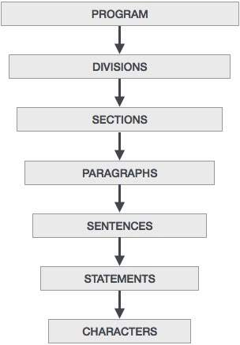

Tarea 11: COBOL
Símbolos
COBOL tiene un par de símbolos, aparte de los de aritmética tradicional, conocidos como palabras reservadas. Estas palabras se utilizan para indicar las instrucciones a utilizar:
- Palabras clave como ADD, ACCEPT, MOVE
- Carácteres especiales cómo +, -, *, <, <=, etc.
- Constantes figurativas, cómo ZERO, SPACES, etc.
Sintaxis
El código en este lenguaje tiene que cumplir algunas normas para ser aceptado por los compiladores. Si bien es cierto que algunas de estas cosas ya no son ocupadas por el cambio de paradigma de tarjetas perforadas a código digital escrito e interpretado por un procesador, se provee de una hoja de estilos para identificar los carácteres.
| Posición | Campo | Descripción |
|---|---|---|
| 1-6 | Números de columna | Reservado para los códigos de línea de número. |
| 7 | Indicador | Puede tener asterisco (*) indicando comentarios. |
| 8-11 | Area A | Todas las divisiones, secciones, párrafos y entidades especiales. |
| 12-72 | Area B | Todos los statements |
| 73-80 | Area de Indicaciones | Esto es lo que usaría el programador para determianr lo que hace el programa. |
Estructura
La estructura del programa es la siguiente:
Esqueleto
000100 IDENTIFICATION DIVISION. 000100
000200 PROGRAM-ID. HELLO. 000101
000250* THIS IS A COMMENT LINE 000102
000300 PROCEDURE DIVISION. 000103
000350 A000-FIRST-PARA. 000104
000400 DISPLAY “Coding Sheet”. 000105
000500 STOP RUN. 000106
Aplicación a descargar para editar y ejecutar
Para ejecutar este tipo de programas, se necesitará un programa llamado Hercules, el cual lo puedes descargar desde el sitio oficial en Mac OS, Linux y Windows.
http://www.hercules-390.eu/Tipo de paradigma
COBOL inicialmente se basó en un contexto de negocios, por lo que se dice que está orientado a negocios con orientación a archivos y aplicaciones.
Programa que identifica el número más grande
IDENTIFICATION DIVISION.
PROGRAM-ID. HELLO.
DATA DIVISION.
WORKING-STORAGE SECTION.
01 WS-NUM1 PIC 9(9).
01 WS-NUM2 PIC 9(9).
PROCEDURE DIVISION.
A000-FIRST-PARA.
MOVE 25 TO WS-NUM1.
MOVE 15 TO WS-NUM2.
IF WS-NUM1 IS GREATER THAN OR EQUAL TO WS-NUM2 THEN
DISPLAY 'WS-NUM1 IS GREATER THAN WS-NUM2'
ELSE
DISPLAY 'WS-NUM1 IS LESS THAN WS-NUM2'
END-IF.
STOP RUN.